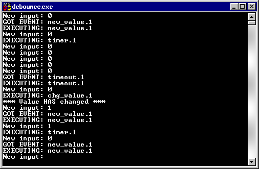

This page shows how to produce a simple, command-line based application implementing the debounce example, using VALID's generated code.
The application to be produced will prompt the user for new sensor values and print all occurring events. By inputting a sequence of sensor values (e.g. 0, 1, 1, 1, 1, 1, 1, 1, 1, 0, 0, 1, 1, 0, 0, 1, each on a new line), it is possible to observe the behaviour of the debounce circuit. The program is terminated by typing the end-of-file character.

The corresponding C++ code files for this example can be found in the
examples directory of the VALID distribution, in directory
<VALID>\examples\debounce\cpp-debounce.
In order to obtain executable C++ code, we first generate the C++ files
with the VALID Toolset. We open the project debounce and
select C++ Code Generation from the Code menu. In
the appearing
dialog, we select the default base class
DesCode_Automaton, as this is a simple example which works
without threading. (A variation of the same example using the threaded
baseclass DesCode_AutomatonThreaded
is found in directory
<VALID>\examples\debounce\cpp-multithreaded.)
Then we choose a target directory and optimization settings as desired,
and click Generate in order to generate the C++ source
files. This step creates four files, which appear in the chosen
target directory:
des_debounce.hdes_debounce.cppapp_debounce.happ_debounce.cppThe former two files contain the control logic, and will not be touched any further. The latter two contain the action code fragments, which augmented in subsequent steps in order to suit our specific needs.
Furthermore, the example uses the project-independent base class
DesCode_Automaton. The code implementing this class is
supplied with the VALID distribution, in the include directory
(<VALID>\include). We copy the following two files from
this directory in order to compile them when building the executable:
DesCode_Automaton.hDesCode_Automaton.cppThe running example uses a timer, which we choose to represent by means
of an integer containing the number of cycles (sampling periods) elapsed
since the timer has been started. If the timer is unused, we will set it to
the value -1. Furthermore, we have to keep track of the input signal
in order to generate the uncontrollable event new_value.1
whenever the input changes. In this simple example, we will ask the user to
type a character on the keyboard at the beginning of each cycle, and emit
new_value.1 whenever the input differs from the input observed
during the previous cycle.
Thus, in addition to the state information of the automaton, our
application will need two data items. Therefore, we edit the generated
header file app_debounce.h and add two fields called
mLastKey and mTime to the application class. We
also make sure that these fields are initialized with appropriate values in
our class constructor. The modified class will look something like the
following:
class DesCode_Actions_debounce : public DesCode_Automaton_debounce {
public:
DesCode_Actions_debounce() {mTime = -1; mLastKey = 0;};
...
/* Member variables */
char mLastKey;
int mTime;
};
|
Next, we have to assign our user-specific code fragments to all events,
which should execute special actions. In the example, we want the timer to
be started, whenever a start even occurs, and we want it to be reset in
case of a reset or timeout event. In order to achieve this, we edit the
code fragments in file app_debounce.cpp and insert assignments
to the mTime member variables of our class. When event
timer.1 occurs, the variable is set to 0, causing the
timer to be incremented by 1 per cycle; when event
reset.1 or timeout.1 occurs, the variable is
reset to -1, stopping the timer.
/********************************************************
** Code fragment for event: timer
********************************************************/
void DesCode_Actions_debounce::
Action_timer(int bit)
{
DesCode_Automaton_debounce::Action_timer(bit);
mTime = 0;
}
/********************************************************
** Code fragment for event: reset
********************************************************/
void DesCode_Actions_debounce::
Action_reset(int bit)
{
DesCode_Automaton_debounce::Action_reset(bit);
mTime = -1;
}
/********************************************************
** Code fragment for event: timeout
********************************************************/
void DesCode_Actions_debounce::
Action_timeout(int bit)
{
DesCode_Automaton_debounce::Action_timeout(bit);
mTime = -1;
}
|
Furthermore, we want to print a message to the terminal, whenever the
event chg_value is generated, i.e. whenever a stabilized
change of the input has been detected. We add an appropriate command to the
corresponding code fragment:
/********************************************************
** Code fragment for event: chg_value
********************************************************/
void DesCode_Actions_debounce::
Action_chg_value(int bit)
{
DesCode_Automaton_debounce::Action_chg_value(bit);
cout << "*** Value HAS changed ***" << endl;
}
|
In this example, all code fragments are passed a template instantiation
parameter, which we have called bit. This has been introduced
in order to obtain code which can be easily extended to a multi-bit
debounce circuit. By changing the template instantiation range within the
model, it is easy to create more events and automata. In such a case, the
code fragments will be passed the number of the bit to be considered as the
bit parameter. In the simple example, we only have one
bit-thus the parameter will always be set to 1, and therefore is
ignored.
Finally, we have to make sure that the automaton is supplied with inputs, i.e. we have to make sure that the occurrence of uncontrollable events is signaled. In a multi-threaded environment, this will probably happen in another thread, but in this simple example, we will suspend the execution of the automaton after each step, and ask the user for the next input, before we let the automaton continue.
Such behavior can be easily implemented as a new method called
execute(), which we add to the action class. This method reads
the keyboard, signals uncontrollable events, and calls step()
in an appropriate sequence of order. At the beginning of each cycle, the
method reads a new line from the terminal, and if the first character read
differs from the input observed in the previous cycle, it generates the
uncontrollable event new_value.1 by calling its signaling
function. Similarly, it generates an event timeout.1, if the
timer has been running for five consecutive cycles. Afterwards, it performs
an automaton step by calling the automatically generated
step() method provided by the superclass.
This behavior is implemented by the following method, which we add to
the file app_debounce.cpp. We also have to declare the method
in the header file app_debounce.h.
const int TIMEOUT = 5;
void DesCode_Actions_debounce::
execute()
{
// Initialize automaton
init();
// Loop forever ...
for (;;) {
// Read uncontrollables from keyboard and signal them:
char buffer[1024];
cout << "New input: " << flush;
cin.getline(buffer, 1024);
if (!cin) {
cout << " |
In order to run the automaton, we create an object of the application
class and call its execute() method. The following
simple main() routine does exactly what is needed:
int main(int argc, char** argv)
{
DesCode_Actions_debounce application;
application.setTraceFunction(trace);
application.execute();
return 0;
}
|
In order to obtain tracing output, we have to supply a tracing function to the automaton. In this example, it suffices to use a simple method, which just writes copy its input to the standard output stream. In more complex environments, especially when using multiple threads, more subtle output methods may be used.
static void trace(const char* line)
{
cout << line << flush;
}
|
It is a good idea to create a new file called main.cpp
containing these two function definitions.
Now the source files are completed. In order to obtain the executable,
we compile and link the four C++ files DesCode_Automaton.cpp,
des_debounce.cpp, app_debounce.cpp, and
main.cpp. In order to activate tracing output, we set the
compiler flag WITH_TRACE during compilation.
© 1998-2000, VALID Technologies. Last Modification Date: 2000-06-19